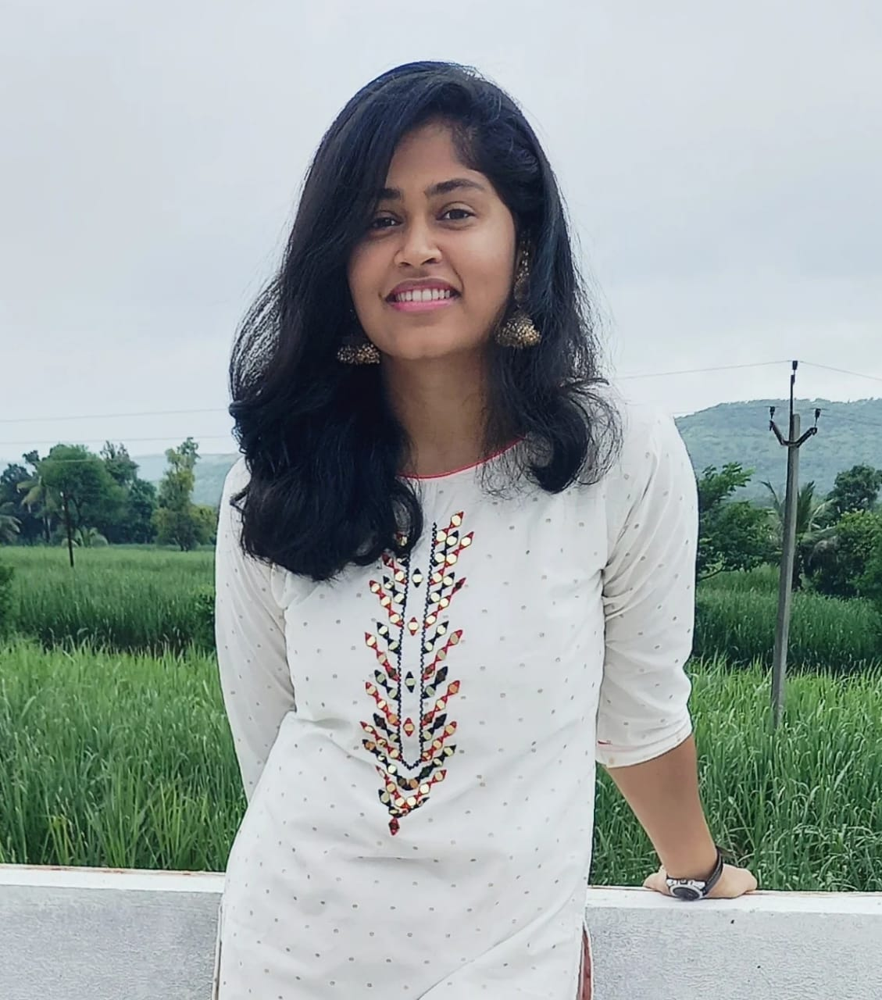

SAMRUDDHI BHARAT SANKPAL
ABOUT ME :-
Keen on learning new programming language and using new frameworks.
Would love to work in team
projects as well as individual projects.
Languages known :-
- HTML
- CSS
- JAVAscript
- Java
- Python
CONTACT :-
Gender - Female
Email address - samruddhibs2001@gmail.com
Mobile No. - 8108864265
Residence - Navi Mumbai, India
PROJECTS
- MyKitchen
- This system assists user in cooking through different recipe videos & getting the products from user which are near its deadline & suggesting recipe related to it. The user has to enter the item(s) he/she has along with its expiry date. As the item nears expiry a popup notification is given to the user as a reminder to use that product.
- The items listed in the system can also be sorted according to time left before expiry. And if the user does not consume the product, he/she is also given the facility to donate the food. While grocery shopping, the user will have the information of the food items available at home and so can help in shopping and reduce unnecessary over-purchasing of products.
- Objective of this project is to help in easy and effective food waste management and also to be able to conceal the user’s need of healthy as well as tasty food.
- Technologies used - Java(programming language), Android Studio(Design(.xml) and Compile(.java)).
- Student Database Management
- This system records and stores students details like name, roll number, address, etc. Various features like update, delete and search are also added.
- Technologies used – Python, PHP(database).
INTERNSHIPS
- Name - Faculty Profile System
- Organization - Ramrao Adik Institute of Technology
- Project details – Website where details of all Faculty members of Ramrao Adik Institute of Technology are recorded and stored.
Details including photo, personal, educational and academic details and Faculty achievements like research papers, etc.
- Technologies used – HTML, JAVAscript, CSS, PHP
- Period of Internship – 3 months
- Name - Workshop and Expert Talk Management Tool of Student
- Organization - Ramrao Adik Institute of Technology
- Project details – Website where Faculty can schedule various expert talks and workshops for Students.
Students can register for scheduled expert talks and workshops from here and get a reminder before the expert talks or workshop.
- Technologies used – HTML, JAVAscript, CSS, PHP
- Period of Internship – 3 months
EDUCATIONAL QUALIFICATION
CERTIFICATIONS
- Skill Enhancement Training on Project Modelling.
- Skill Enhancement Training on Become an Android App Developer.
- Skill Enhancement Training on A step towards Product Development.
- Skill Enhancement Training on A step towards Application Development.
POSITION OF RESPONSIBILTY
- Best management event in TechFest, Ramrao Adik Institute of Technology.
- Volunteering at Udaan, as a part of SOCIAL WING, Ramrao Adik Institute of Technology.
EXTRA CURRICULAR ACHIEVEMENTS
- 10m Air Rifle - Zonal level
- Shotput
- Completed level – Praveshika Purna, in Bharatnatyam,
from Akhil Bhartiya Gandharva Mahavidyalaya Mandal,Mumbai.
- Hobbies -Cycling, Dancing, Gardening, Quilling